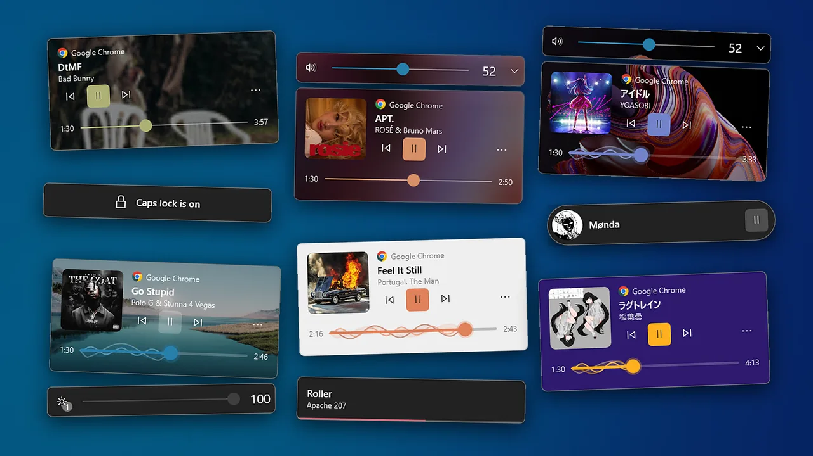
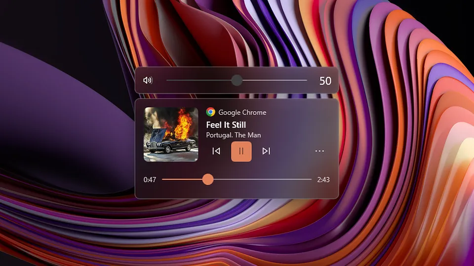
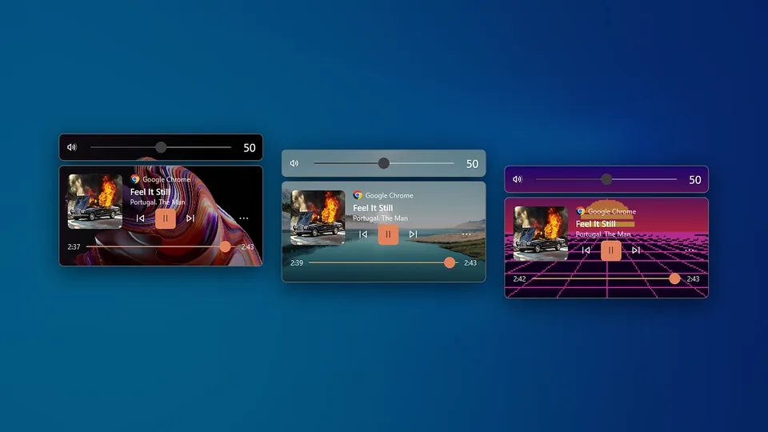
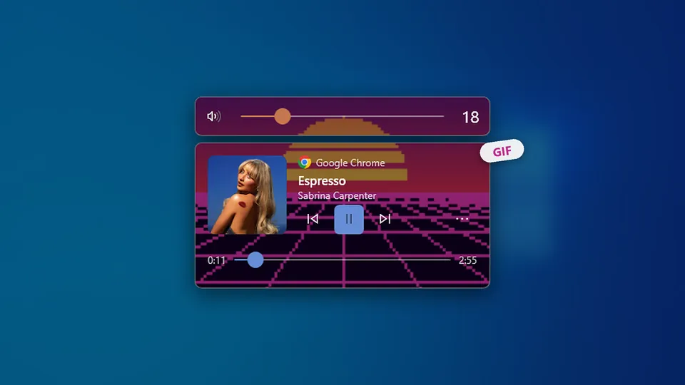
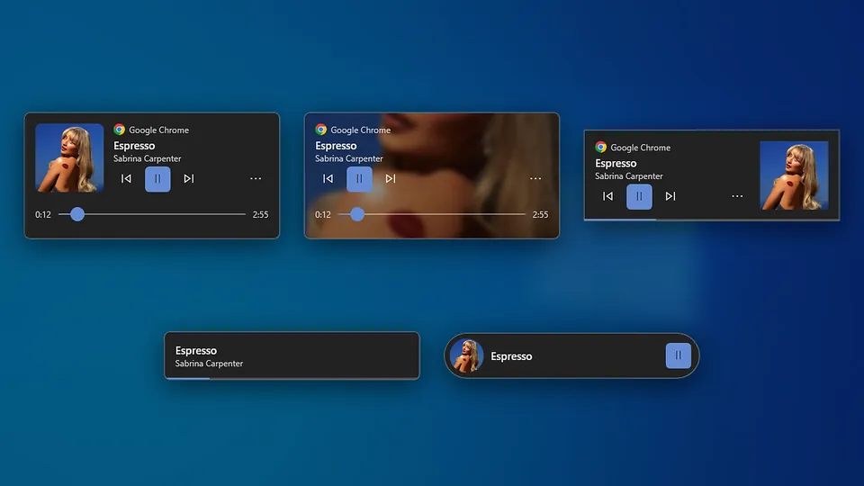
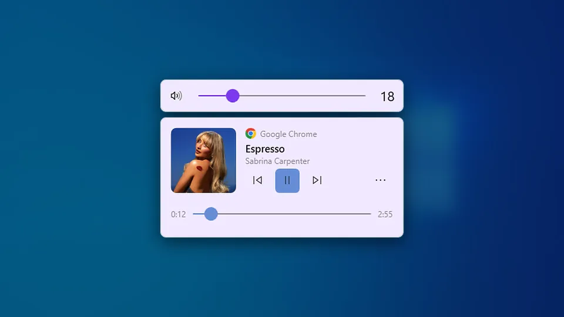
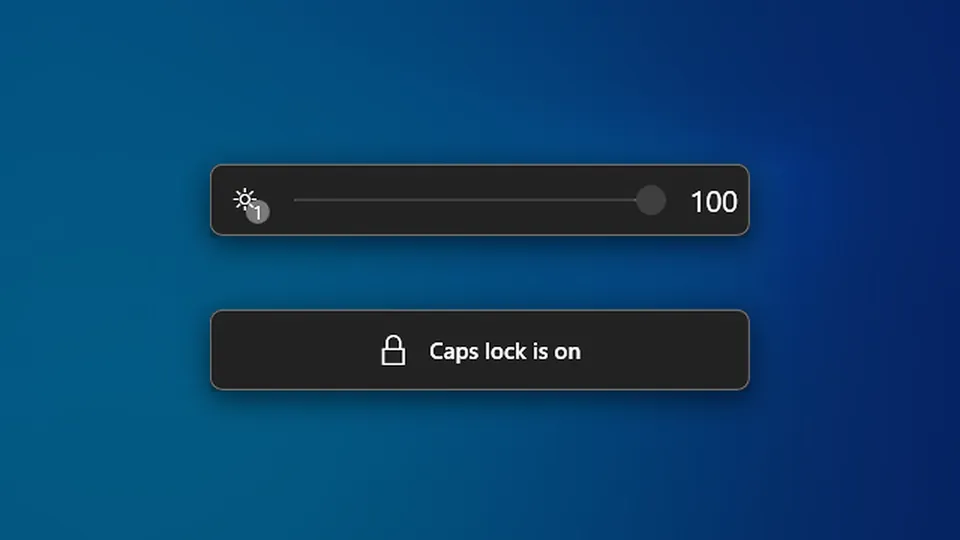
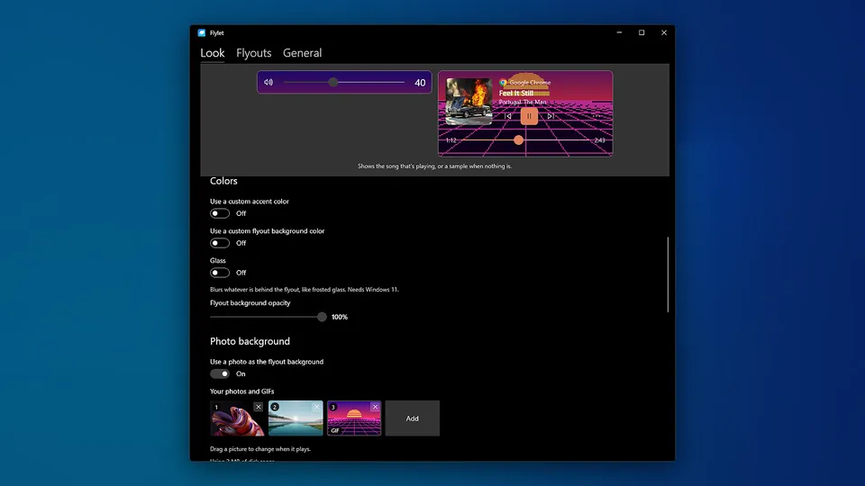

Flylet
Your Windows volume pop-up, redesigned and made yours
Flylet is a free, open-source app that replaces the Windows 11 and Windows 10 volume, media, brightness and lock-key pop-ups with cleaner ones you can customize.
Or: winget install 9NPSS6NW7T23 --source msstore

Features
- Real media controlsAlbum art, title, artist, play/pause, previous/next, and a timeline you can drag that keeps moving while music plays. Every player that reports to Windows gets its own card.
- Your own picturePut a photo or animated GIF behind the pop-ups, then move, zoom, rotate, blur or darken it. Add several and get a new one each time a pop-up opens.
- GlassBlurs whatever is behind your pop-ups, like frosted glass (Windows 11).
- Your colorsFollow your Windows accent color, or pick your own accent and background.
- Media card stylesClassic, Minimal, Compact pill, Album background, or mix your own.
- More than volumeBrightness (laptop screens and external monitors), Caps Lock, Num Lock and airplane mode.
- LightAlmost no CPU when idle, an optional "Use less memory" switch, and it runs on 64-bit and 32-bit PCs.
- 31 languagesRuns from the system tray and can start with Windows.







FAQ
Is Flylet free?
Yes. Free, open source (MIT), no ads, no account, nothing locked.
Is there a ModernFlyouts alternative that works on Windows 11?
Flylet is a maintained continuation of ModernFlyouts, which was archived in 2025. It works on Windows 11 again and on Windows 10 22H2, with credit to the original ModernFlyouts authors.
Can I put my own picture behind the volume pop-up?
Yes. Use any photo or animated GIF, adjust it to fit, and add blur or darkening so the text stays readable.
Does it work on Windows 10?
Yes, Windows 10 version 22H2 and Windows 11, on 64-bit and 32-bit PCs.
Which music apps work?
Any player that shows up in Windows' own media controls, such as Spotify, browsers and YouTube Music.
Does it collect data?
No. Flylet has no analytics and no tracking. Privacy policy
How do I install it?
From the Microsoft Store (it updates automatically), or with winget: winget install 9NPSS6NW7T23 --source msstore